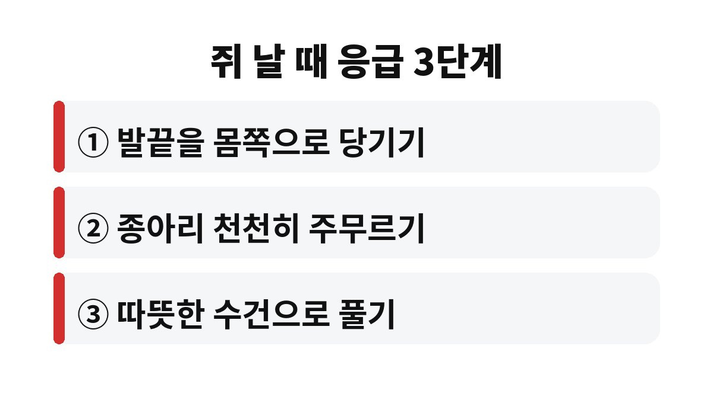
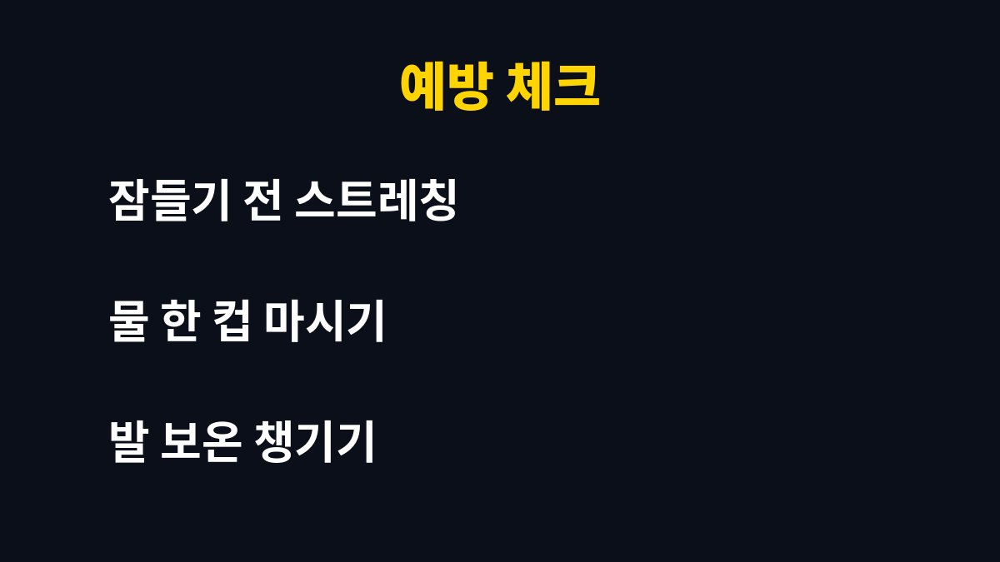

자다가 다리에 쥐가 나는 건 근육이 순간적으로 확 오그라드는 현상이고, 대부분 잠들기 전 스트레칭과 수분 보충, 발 보온만 챙겨도 눈에 띄게 줄어드는 경우가 많습니다. 새벽에 종아리를 부여잡고 깨는 일이 반복된다면, 단순한 피로인지 몸이 보내는 신호인지 궁금하지 않으세요?
날이 쌀쌀해지는 11월이 되면 자다가 다리에 쥐가 난다는 분들이 부쩍 늘어요. 이불 밖으로 발이 나와 차가워지고, 낮에 걸은 피로가 쌓인 채로 잠들기 때문이죠. 어렵지 않게, 오늘 밤부터 해볼 수 있는 것 위주로 풀어 드릴게요.

가장 흔한 이유는 근육 피로와 혈액순환 저하예요. 낮에 오래 서 있거나 많이 걸으면 종아리 근육이 뭉치고, 밤에 체온이 떨어지면 그 근육이 갑자기 수축하기 쉽습니다. 겨울이 다가오면 발이 차가워지는 것도 한몫하고요.
여기에 수분이 부족하거나 땀을 많이 흘린 날, 운동을 평소보다 무리하게 한 날에도 더 잘 생긴다고 알려져 있어요. 임신 중이거나 나이가 들면서 근육량이 줄어든 경우에도 자주 겪는 분들이 많습니다. 결국 한 가지 원인이라기보다 여러 습관이 겹친 결과인 경우가 많은 거죠.
요점 정리
① 근육 피로와 찬 기운이 가장 흔한 원인
② 수분 부족도 쥐를 부르는 요인
③ 잠들기 전 습관만 바꿔도 달라질 수 있음
당황해서 벌떡 일어나면 오히려 더 아플 수 있어요. 먼저 누운 채로 아픈 쪽 발끝을 천천히 몸쪽으로 당겨 주세요. 종아리 뒤쪽이 쭉 늘어나는 느낌이 들 때까지 숨을 내쉬며 버티면 대부분 서서히 풀립니다.
그다음엔 손으로 종아리를 부드럽게 주물러 주고, 따뜻한 수건이나 손으로 감싸서 온기를 더해 주세요. 세게 문지르거나 억지로 비트는 건 금물이에요. 근육이 풀린 뒤에도 한동안 뻐근할 수 있으니, 바로 뛰어다니지 말고 천천히 움직이는 게 좋습니다.
효과가 있는 편이에요. 벽을 짚고 한쪽 다리를 뒤로 뻗어 뒤꿈치를 바닥에 붙인 채 종아리를 늘려 주세요. 양쪽을 번갈아 몇 번씩만 해도 뭉친 근육이 풀려 밤중에 확 오그라드는 일이 줄어듭니다. 거창한 운동이 아니라 양치하다 말고 할 수 있는 정도예요.
| 습관 | 이렇게 해보세요 |
| 스트레칭 | 잠들기 전 종아리 늘리기 |
| 수분 | 자기 전 물 한 컵 천천히 |
| 보온 | 양말이나 담요로 발 따뜻하게 |

낮 동안의 습관이 밤을 결정해요. 오래 앉아 있다면 중간중간 일어나 발목을 돌리고 종아리를 가볍게 풀어 주세요. 같은 자세로 오래 있으면 혈액순환이 느려져 밤에 근육이 더 쉽게 뭉칩니다. 저녁에 갑자기 무리한 운동을 하는 것도 피하는 게 좋아요.
잠자리 환경도 중요합니다. 이불을 발끝까지 덮고, 양말이나 수면 양말로 발을 따뜻하게 해 주세요. 방이 너무 건조하거나 차가운 것도 근육을 긴장시킬 수 있어요. 카페인과 술은 수분을 빼앗아 가는 편이라 늦은 저녁에는 조금 줄여 보시길 권해요.
식사도 한 번 돌아보세요. 채소와 과일, 견과류, 우유나 두부처럼 여러 영양소를 골고루 먹으면 근육이 제 기능을 하는 데 도움이 됩니다. 다이어트로 끼니를 너무 줄였거나 땀을 많이 흘린 날에는 특히 신경 써야 해요. 이렇게 작은 습관이 쌓이면 새벽에 종아리를 부여잡고 깨는 날이 확실히 줄어듭니다. 하루아침에 달라지진 않아도, 일주일만 꾸준히 해 보시면 차이를 느끼는 분이 많아요.
가끔 한 번씩 나는 쥐는 대부분 큰 문제가 아닌 경우가 많아요. 하지만 거의 매일 반복되거나, 한쪽 다리만 붓고 아프거나, 저림과 힘 빠짐이 함께 온다면 이야기가 달라집니다. 혈관이나 신경, 전해질 문제 등이 숨어 있을 수도 있거든요.
또 복용 중인 약이 있거나 당뇨 같은 지병이 있다면 더더욱 가볍게 넘기지 마세요. 생활습관을 바꿔도 몇 주째 나아지지 않는다면, 한 번쯤 진료를 받아보는 게 마음 편한 길입니다.
오늘 밤 자기 전에 종아리 스트레칭부터 해보시겠어요? 새벽에 쥐로 깨는 일이 줄었는지 며칠 지켜보시고, 도움이 됐다면 구독으로 다음 건강 이야기도 챙겨 가세요.
※ 이 글은 일반적인 건강 정보이며 진단·치료를 대신하지 않습니다. 증상이 계속되면 전문의 상담을 권장합니다.